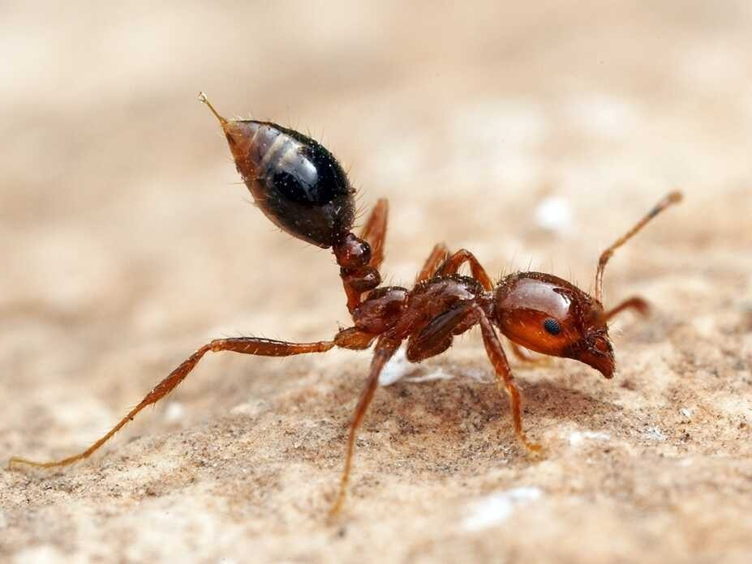

Semut Api (Solenopsis spp)
Semut api merupakan salah satu kelompok yang paling sosial dalam genus serangga dan hidup bermasyarakat yang disebut koloni, yang terorganisasi dengan sangat baik. Koloni dan sarang-sarang semut yang teratur, terkadang terdiri dari ribuan semut per koloni. Jenis semut dibagi menjadi semut pekerja, semut pejantan, dan ratu semut. Satu koloni dapat menguasai dan memakai sebuah daerah luas untuk mendukung kegiatan mereka (Tarumingkeng, 2001). Koloni semut kadangkala disebut super organisme dikarenakan koloni-koloni mereka yang membentuk sebuah kesatuan. Ada koloni yang melakukan pekerjaan dengan pertanian atau peternakan. Dengan jaringan komunikasi yang sangat kuat, hewan ini begitu unggul sehingga tak dapat dibandingkan dengan organisme manapun dalam segi spesialisasi dan organisasi sosial. Semua semut melewatkan sebagian besar waktunya untuk mencari makan. Mereka mencari makanan dan makan, lalu mereka lapar lagi, dan kembali pergi mencari makan. Mereka juga akan lari dari sesuatu yang bisa membahayakan diri mereka.
Morfologi
Semut api merujuk kepada semut yang bewarna merah dan mampu mengigit makhluk hidup lain. Tubuh semut api terdiri atas tiga bagian, yaitu kepala, mesosoma (dada), dan metasoma (perut). Morfologi semut api cukup jelas dibandingkan dengan serangga lain yang juga memiliki antena, kelenjar metapleural, dan bagian perut yang berhubungan ke tangkai semut membentuk pinggang sempit (pedunkel) di antara mesosoma (bagian rongga dada dan daerah perut) dan metasoma (perut yang kurang abdominal segmen dalam petiole). Petiole yang dapat dibentuk oleh satu atau dua node (hanya yang kedua, atau yang kedua dan ketiga abdominal segmen ini bisa terwujud). Tubuh semut api memiliki eksoskeleton atau kerangka luar yang memberikan perlindungan dan juga sebagai tempat menempelnya otot. Menurut Tarumingkeng (2001) bahwa, semut api memiliki lubang-lubang pernapasan di bagian dada bernama spirakel untuk sirkulasi udara dalam sistem respirasi mereka. Pada kepala semut api terdapat banyak organ sensor. Semut api memiliki mata majemuk yang terdiri dari kumpulan lensa mata yang lebih kecil dan tergabung untuk mendeteksi gerakan dengan sangat baik. Mereka juga punya tiga oselus di bagian puncak kepalanya untuk mendeteksi perubahan cahaya dan polarisasi. Semut api umumnya memiliki penglihatan yang buruk, bahkan ada yang buta. Pada kepalanya juga terdapat sepasang antena yang membantu semut api mendeteksi rangsangan kimiawi. Antena ini juga digunakan untuk berkomunikasi satu sama lain dan mendeteksi feromon yang dikeluarkan. Selain itu, antena semut api juga berguna sebagai alat peraba untuk mendeteksi segala sesuatu yang berada di depannya. Pada bagian depan kepala juga terdapat sepasang rahang atau mandibula yang digunakan untuk membawa makanan, memanipulasi objek, membangun sarang, dan untuk pertahanan Di bagian dada semut api terdapat tiga pasang kaki dan di ujung setiap kakinya terdapat semacam cakar kecil yang membantunya memanjat dan berpijak pada permukaan. Sebagian besar semut jantan dan betina calon ratu memiliki sayap. Namun, setelah kawin betina akan menanggalkan sayapnya dan menjadi ratu semut yang tidak bersayap. Semut pekerja dan prajurit tidak memiliki sayap. Di bagian metasoma (perut) semut api terdapat banyak organ dalam yang penting, termasuk organ reproduksi. Semut juga memiliki sengat yang terhubung dengan semacam kelenjar beracun untuk melumpuhkan mangsa dan melindungi sarangnya (Yahya dalam PDF)
Habitat dan Perilaku Semut Api
Semut api biasa hidup di tanah (baik dataran rendah maupun dataran tinggi/gunung) yang memiliki suhu sedang. Semut api dikatakan sebagai pekerja keras. Mereka dapat membangun bukit setinggi 30 cm dan selebar 60 cm, atau menggali terowongan labirin hingga sedalam 1,5 m di bawah tanah. Di wilayah-wilayah tertentu, semut api membangun bukit-bukit kecil hingga lebih dari 350 buah. Kemampuan makhluk sekecil itu dapat membangun sarang yang besar tentu bergantung pada kebersamaan dan kerajinannya (Yahya, dalam PDF). Seekor semut pekerja yang baru memasuki masa dewasa menghabiskan beberapa hari pertama untuk merawat ratu dan semut muda. Setelah itu menggali dan membuat sarang kemudian mencari makan dan mempertahankan sarang. Perubahan tugas ini bisa terjadi dengan mendadak dan disebut dengan kasta sementara. Semut api melakukan hal ini karena mencari makan memiliki resiko kematian yang tinggi, sehingga semut hanya berpartisipasi jika mereka sudah cukup tua dan bagaimanapun juga lebih dekat pada kematian. Semut memiliki tingkat pengorbanan diri yang sangat tinggi dan karenanya mereka selalu mengundang teman mereka ke setiap sumber makanan yang ditemukan dan mereka berbagi makanan. Semut dapat mencapai sasaran dengan mengikuti jejak ke makanan, meskipun tak ada lagi semut yang mengajak. Berkat adanya jejak yang dibuat penjelajah dari makanan ke sarang, saat penjelajah tiba di sarang dan melakukan tarian batu, teman-temannya mencapai sumber makanan tanpa bantuan dari si pengajak. Jika kita menjatuhkan bongkahan makanan ke tanah, maka hewan yang pertama menjangkaunya adalah semut. Hal ini berlaku di sebagian besar daratan tempat semut ada. Dalam hal jumlah individu dan biomassa (berat tubuh), armada semut memang mendominasi di hampir seluruh habitat darat dunia. Siang atau malam, pasukan semut tersebut dengan giat menjelajah daratan, sehingga mereka dapat menemukan makanan sebelum hewan lain menemukannya. Semut api adalah makhluk yang dapat hidup hanya dengan berkelompok. Mereka tak dapat bertahan hidup sendirian. Ketika semut api terpisah dari kelompoknya oleh rintangan tipis, mereka mencoba mencapai anggota lain koloninya dengan menusuk penghalang. Terjadi banyak variasi pada perilaku semut api ketika jumlah individu dalam kelompok berubah. Ketika jumlah semut dalam sarang meningkat, kegiatan setiap individu secara proporsional juga meningkat. Begitu semut pekerja berkelompok, mereka berkumpul menjadi tenang dan menghabiskan energi. Hal ini menunjukkan bahwa semut api tak dapat bertahan hidup sendirian. Makhluk kecil ini telah diciptakan dengan ciri-ciri yang memungkinkan mereka hidup hanya dalam kelompok atau malahan hanya dalam koloni. Dan ini membuktikan betapa klaim evolusionis mengenai proses bersosialisasi semut bertentangan dengan realitas. Seekor semut api yang menghadapi lingkungan secara sendirian mustahil bisa bertahan hidup. Ia harus berkembang biak, membangun sarang untuk dirinya dan larvanya, mencari makan untuk diri dan keluarganya, menjadi penjaga pintu, menjadi prajurit, dan juga pekerja yang merawat larvanya. Salah satu teknik terpenting semut api untuk membela diri adalah produksi racun atau asam format dalam kantung racun di tubuh mereka. Penggunaan racun ini ampuh untuk melawan musuh. Racun mereka bahkan dapat menyakiti manusia. Ketika menyengat, mereka menyebabkan alergi pada sebagian orang. Asam format juga manjur untuk mengusir musuh. Semut api dapat membela diri terhadap makhluk hidup yang berukuran besar sekalipun karena kemampuannya meninggalkan jejak. Salah satu contoh adalah pertempuran semut api dengan capung. Semut-semut yang melihat capung dapat berkumpul berkat sistem pelacakannya, kemudian bersama-sama menyerang dan membunuhnya. Dalam contoh lain, dengan cara yang sama mereka mengalahkan ulat yang menyerang seekor anggota koloni, meskipun ukuran ulat ini lebih besar dari pada ukuran mereka. Mungkin kelihatannya biasa saja apabila makhluk hidup menyerang atau bertarung dengan makhluk lain demi mempertahankan hidup, atau demi makanan. Akan tetapi, jika seekor hewan bekerja sama dengan hewan lain, dari spesies yang sama, untuk bersama-sama melawan musuh, dan jika mereka mengkomunikasikan taktik perang satu sama lain, hal ini patut mendapat perhatian. Semut api merupakan hama utama pertanian dan perkotaan, meng-hancurkan hasil panen dan menyerang area pemukiman, baik di luar maupun di dalam ruangan. Bukan hanya itu, semut api mampu mengigit manusia. Gigitannya amat menyakitkan seperti dibakar api, karena racun atau asam format yang diproduksi oleh kantung racun. Gigitannya mampu menyebabkan tempat yang digigit berair, dan bagi mereka yang mempunyai alahan, mampu menyebabkan mata dan telinga bengkak. Untuk mengobati akibat gigitan semut ini kalau dalam keadaan darurat bisa dikompres menggunakan air es, atau bila terjadi kerusakan pada jaringan kulit akibat luka gigitan semut api dapat diobati dengan mengguna-kan Poneratoxin (Neurotoxin Pentacosapeptide).